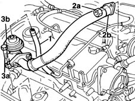
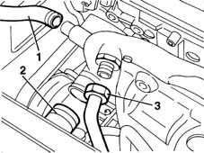
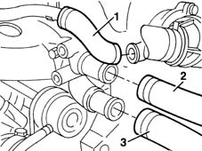
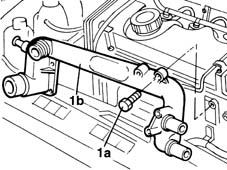

1088D26 rigid intake pipe to water pump - r+r for versions with a/c
- Path
- Procedures > 10 ENGINE UNIT > 1088 ENGINE COOLING > 1088D COOLANT HOSES AND SLEEVES > 1088D26 rigid intake pipe to water pump - r+r for versions with a/c
- Kind
- repair procedure (removal / refitting; the operation number is the code)
- Applies to
- engines: 1.9 JTD 8V; all production periods
- Interactive page
- https://sloeber94.github.io/elrnDB-fMltpl/en/#/2891447
Applies to: engines: 1.9 JTD 8V; all production periods
 Removing
Removing
 Refitting
Refitting1016A10 sound-proofing cover - r + r
1. Disconnect the vacuum pipe from the E.G.R. valve.
2. Undo nuts (2a) and remove the exhaust gas supply pipe from the E.G.R. valve to inlet manifold (2b) on the intake manifold side.
3. Undo bolts (3a) and remove EGR valve (3b) together with the pipe carrying exhaust gas to the intake manifold.

Applies to: engines: 1.9 JTD 8V; all production periods
Position a suitable container for recovering the coolant fluid.
Undo the drain plug in the lower part of the radiator.
1. Disconnect the system supply hose from the pump rigid inlet pipe.
2. Disconnect the coolant outlet pipe from the radiator from the coolant pump rigid inlet pipe to the coolant pump.
3. Disconnect the coolant outlet pipe from the engine oil heat exchanger from the rigid inlet pipe to the coolant pump.

Applies to: engines: 1.9 JTD 8V; all production periods
1. Disconnect the coolant supply pipe to the engine oil heat exchanger from the thermostat.
2. Disconnect the coolant return pipe from the heating system heat exchanger from the coolant pump rigid inlet pipe.
3. Disconnect the coolant outlet pipe from the thermostat from the coolant pump rigid inlet pipe.

Applies to: engines: 1.9 JTD 8V; all production periods
1. Undo bolts (1a) and remove coolant pump rigid inlet pipe (1b) together with the gasket.

Applies to: engines: 1.9 JTD 8V; all production periods
Refitting
RemovingCheck the condition of the rigid pipe.
Fit the rigid pipe together with a new gasket.
Tighten the bolts securing the rigid pipe to the cylinder head to torque.
 | Fastening | Component | Ø | Value (daNm) |
|---|---|---|---|---|
- | Bolt | COOLANT PUMP RIGID INLET PIPE | M6 | 0.9 |
Tighten the nut securing the rigid outlet pipe to the heat exchanger.
Connect the hoses to the pipe.
Ensure that the grooves on the hose fit over the ridges on the rigid pipe sections on the radiator and thermostat.
Secure the hose using new collars.
Tighten the bolts and the nuts securing the EGR valve and exhaust gas outlet pipe to the intake manifold.
Tighten the bolts and nuts to torque.
Connect the vacuum pipe to the EGR valve.
- 1088A10 Engine COOLANT - Check density' and top up level, if necessary